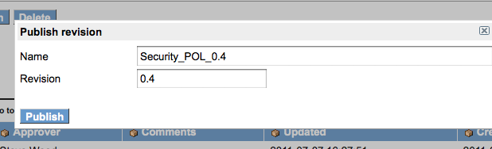
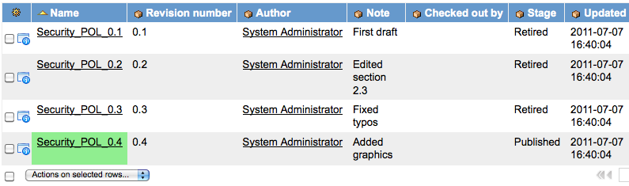

Publishing a Document
| |
Note: This article applies to Fuji and earlier releases. For more current information, see Managed Documents at http://docs.servicenow.com
The ServiceNow Wiki is no longer being updated. Visit http://docs.servicenow.com for the latest product documentation. |
Contents
1 Overview
Once a document has been created and edited, a specific revision can be submitted for draft review and final approval. After final approval, the document can be published.
2 Submitting a Revision for Review
When a draft of the document is ready, submit the draft for review. If the document does not have reviewers identified in the Reviewers field of the document record, the review process is omitted.
- Navigate to the document record.
- Right-click the appropriate revision.
- Select Submit Revision. The revision stage is set to Awaiting Review:
{kind=link}
{kind=link}
If the reviewer rejects the document, the author and owner are notified and the review is cancelled. The author, owner, and reviewer should discuss what changes need to be made to the document. If the reviewer approves the document, the author and owner are notified that the review was successful and the document can move to the approval stage.
If multiple reviewers are assigned to a document, the first reviewer to act dictates what happens to the document. For example, there are two reviewers, A and B. If reviewer A acts first and rejects the document, the review process stops and the revision state is set to Cancelled. Reviewer B receives a notification email stating that the review was rejected and their status is changed to No Longer Required. If reviewer A acts first and approves the document, the review process stops and the document can move to the approval stage. Reviewer B's status is changed to No Longer Required. = Publishing a Document =
2.1 Approval Process
After the document has been reviewed, submit the document for approval. If the document does not have an approver, the approval process is omitted.
When the document is Active, the workflow Document Management Default is used to manage approvals:
{kind=link}
If the approver rejects the document, the author and owner are notified and the document review is cancelled. The author, owner, and approver should discuss what changes need to be made to the document. When the document is ready, a new review can be initiated.
If the final approver approves the document, the author and the owner are notified. Once final approval is successful, the document stage changes to Ready for Publishing in the Document Revisions list:
{kind=link}
If there are multiple approvers, the approval process works in sequence and multiple approvers can be assigned to a single sequence. For example:
Sequence 1: approvers A and B
Sequence 2: approvers C and D
Sequence 3: approver E
Because the sequences take place in ascending chronological order, approvers A and B receive the approval request first (approvers C, D, and E are not part of the process yet). Similar to the review process, the first approver to act within a sequence dictates what happens to the document. If approver A acts first and rejects the document, the approval process stops and the state is set to Cancelled. Approver B's status is changed to No Longer Required. If approver A acts first and approves the document, the process stops and approver B's status is changed to No Longer Required. Then, the document moves to approval sequence 2. After at least one approver in each sequence approves the document, the author and the owner are notified that the document has been approved. == Publishing the Revision ==
Publish the approved revision from the Document Revisions list.
- Navigate to the document record.
- In the Document Revisions List, click the revision marked Ready for Publishing.
- Click Publish Revision to display the Publish dialog box:
- 
- The revision number matches the latest revision number. If your standard is to change the revision number when the document is published, such as incrementing the version number to 1.1 or 1.0.1, the change can be made on this dialog box manually.
- Click Publish.
- The published revision is highlighted in green and the stage of previous revisions is automatically changed to Retired:
- 
- If the approval and publishing process is repeated, the published revision is retired when the new revision is published. Any workflows running against previous revisions are canceled when the document is published.
{kind=link}
{kind=link}
2.2 Publishing to the Knowledge Base
Publishing documents to the Knowledge Base requires the Knowledge Document Plugin.
3 Enabling Electronic Signature for Approval
You can activate the Approval with E-Signature plugin to require that users type in a user name and password when reviewing and approving documents. This is helpful if you must obtain a digital signature for compliance or auditing purposes. The digital signature is not tracked or stored in the document record. Users must simply type in a user name and password after clicking the Approve or Reject button.
{kind=link}
After activating the Approval with E-Signature plugin, ensure that a row in the e-signature registry table is created for the dms_document_revision table.
- Navigate to System Definition > e-Signature Registry.
- Check if dms_document_revision is already listed and Enabled is set to true.
- If not listed, click New.
- In Table name, select Document Revision.
- Select Enabled.
- Click Submit.
{kind=link}